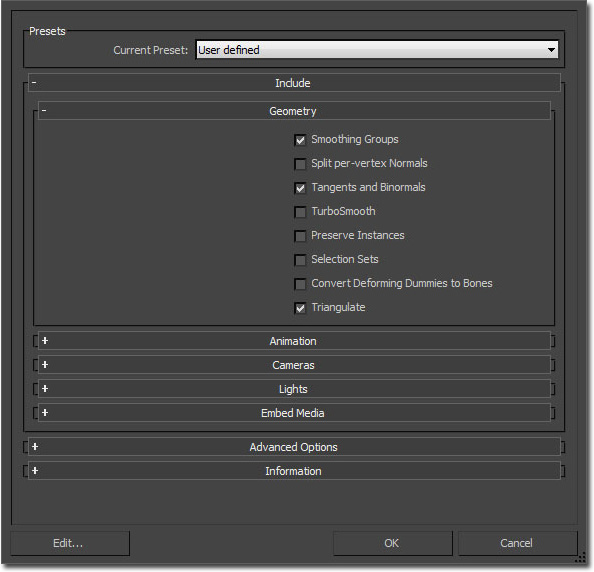
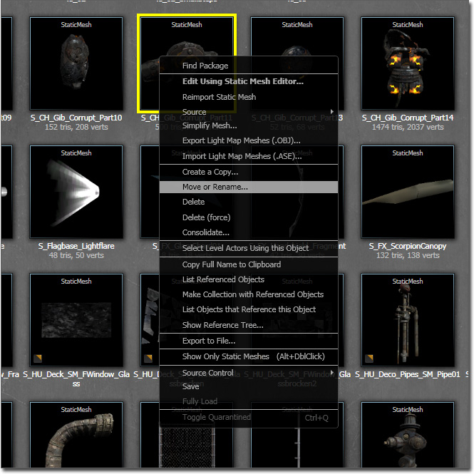
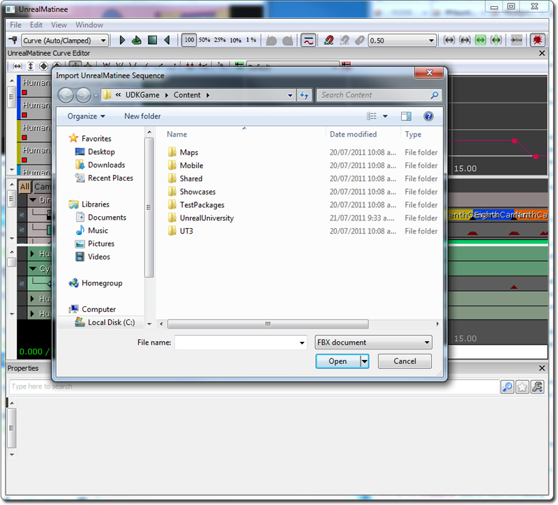

UDN
Search public documentation:
FBXBestPracticesCH
English Translation
日本語訳
한국어
Interested in the Unreal Engine?
Visit the Unreal Technology site.
Looking for jobs and company info?
Check out the Epic games site.
Questions about support via UDN?
Contact the UDN Staff
日本語訳
한국어
Interested in the Unreal Engine?
Visit the Unreal Technology site.
Looking for jobs and company info?
Check out the Epic games site.
Questions about support via UDN?
Contact the UDN Staff
FBX 最佳实践方案
概述
静态网格物体工作流程
- 将网格物体从您的 3D 应用程序中导出到 FBX 文件。
- 供 Epic 的美术人员使用的常见导出设置包括：
- 启用 Smoothing Groups（平滑组）
- 启用 Tangents and Binormals（切线和副法线）
- 启用 Preserve Edge Orientation（保留边朝向）
- 供 Epic 的美术人员使用的常见导出设置包括：
- 使用虚幻编辑器中的内容浏览器导入该 FBX 文件。

有效链接
骨架网格物体工作流程
- 将网格物体和骨架导出到一个 FBX 文件。
- 选择您想要导出的项（网格物体和关节链根），然后‘导出选中项’。
- 供 Epic 的美术人员使用的常见导出设置包括：
- 禁用 Smooth Mesh（平滑网格物体）
- 启用 Smoothing Groups（平滑组）
- 使用虚幻编辑器中的内容浏览器导入该 FBX 文件。
有效链接
动画工作流程
- 将动画导出到一个 FBX 文件。
- 选择您想要导出的项（如果需要可以是关节链根、网格物体），然后‘导出选中项’。
- 导出设置：
- 启用 Animation（动画）
- 在虚幻编辑器中的 AnimSet 编辑器中导入该 FBX 文件。
有效链接
顶点变形目标工作流程
- 将顶点变形目标导出到一个 FBX 文件。
- 选择您想要导出的项（具有 blendshapes/morpher 修饰符的网格物体），然后‘导出选中项’。
- 导出设置：
- 启用 Animation（动画）
- 启用 Deformed Models/Deformations（变形的模型/变形） - 所有选项
- 在虚幻编辑器中的 AnimSet 编辑器中导入该 FBX 文件。
有效链接
命名方案
- 静态网格物体： SM_<PackageName>_<AssetName>_<Index>
- 骨架网格物体： SK_<PackageName>_<AssetName>_<Index>
场景管理
 如果有一个该网格物体将其与骨架绑定的未使用 "export" 文件会更容易。该网格物体将会只用于导出。通过该文件构建这个骨架，但是将它保存到一个单独的骨架文件中。
如果有一个该网格物体将其与骨架绑定的未使用 "export" 文件会更容易。该网格物体将会只用于导出。通过该文件构建这个骨架，但是将它保存到一个单独的骨架文件中。
 单独的骨架文件。
单独的骨架文件。
 通常也将每个动画分别存储在它们自己的文件中，这样追踪文件系统中所有不同的动画会很简单。
通常也将每个动画分别存储在它们自己的文件中，这样追踪文件系统中所有不同的动画会很简单。
在虚幻编辑器中重新命名内容

对于动画，您可以在 "Anim Sequence（动画序列）" -> "Rename Sequence（重新命名序列）" 下的 AnimSet Viewer（AnimSet 查看器）中重新命名它们。
有效链接
整个场景导入/导出
 选择 FBX 格式，为它取名并点击 OK。
选择 FBX 格式，为它取名并点击 OK。
 在同一个 Matinee 窗口中，您还可以导入或重新导入 FBX 数据。
在同一个 Matinee 窗口中，您还可以导入或重新导入 FBX 数据。
